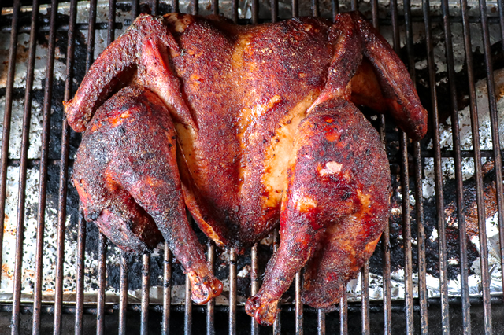

Smoked Turkey

This is my second most requested meal, a smoked turkey. As you have probably noticed, the turkey
isn't sitting in its usual position with the legs tucked to the sides and the breasts perkey and on top.
The turkey is spatchcocked. It looks unconventianal but it serves a very important function. By cutting
out the neck and spine it opens the turkey up to cook more evenly. One of the objectives smokers try to
cut down on is dry, overcooked, bitter meat. You can have success in smoking a turkey using the
conventional position but this method has proven to me a very reliable and easy method to get the perfect
smoked turkey!
Ingredients
- 1 Butterball turkey
- Olive oil
- Badia Complete Seasong (green lid)
- Apple or cherry chunks/pellets (I've been using cherry and it has been working great)
- Pre-heat the smoker to 300-350 degrees F.
- Prep the butterball turkey by cutting out the neck and spine. I love using my clever with this
step because it makes it much easier. Open the bird and flatten it out with the breasts on top.
- Coat the turkey in a thin layer of olive oil.
- Sprinkel on a generous portion of the Badia Complete Seasoning, coating the whole bird. Be sure
to lift the legs and wings to make sure all surfaces are seasoned.
- Place the bird in the smoker with the breasts and legs pointing up. Some people will take some
tin foil and covere some of the thin points like on the legs and wing tips. I've covered and not
covered. It's up to you. I like it as easy as possible as long as it doesn't sacrifice quality. It
really doesn't make that much of a difference.
- Smoke at a higher temperature for about two-three hours. Check the internal temperature of the
turkey at it's thickest part of the thigh and make sure it cooks to 165 degrees F.
- Let it rest for about a half hour and then carve and enjoy. It's going to be juicy!